Roughly ten years ago as a master’s student studying history at Boğaziçi University, I, like everyone else, frequently used James Redhouse’s Lexicon during my studies. Since the book was prohibitively large and heavy, everybody had difficulty carrying it from place to place. After some research, I found that no PDF version existed on the Internet. This drove me to scan the entire book into a PDF file, which I found myself sharing with several email groups. This is how, on March 6, 2010, the book was added to an electronic environment, albeit as an image, for the very first time.
I knew, however, that this was not sufficient and that the entire work would need to be properly digitized. Consequently, we began this project in June 2015—one year prior to the launch of LexiQamus in June 2016—by typing out the Ottoman words included in the Lexicon. In summer of 2017, approximately one year after LexiQamus was launched, we began efforts to completely digitize the dictionary. Through crowd-sourcing, I endeavored to direct a project in which a great many people would participate and that would result in the release of a final product. However, I had no idea where to start. The methodology that we would adopt was absolutely critical, as projects of such magnitude, when executed by a single individual, not only require a considerably large amount of time but also risk giving rise to a multitude of errors impossible to correct later because restrictions cannot be made with a specially designed software. In order to overcome these obstacles, we were in need of either a desktop or web application.
Here, I must certainly acknowledge the immense support and assistance of Orhan Aykut, a computer engineer as well as an invaluable mentor of mine working as a senior specialist in charge of the database architecture at the Information Technologies Authority (Bilgi Teknolojileri ve İletişim Kurumu). I mentioned this project to him and asked how it could be brought to life, to which he replied that he would be able to write a program for it. I explained to him in great detail what I was mulling over in my head and we began working. Consulting with each other at great length throughout the entire process, we developed a program named LQ-Edit and over the course of a year and a half, completed writing the program’s software and digitizing the dictionary. Whereas we had originally thought that the entire process would be very short, we found ourselves running into a myriad of unforeseen obstacles, like text or software-related issues, throughout our journey. Although tiring, we were able to overcome each and every one of these obstacles.
Methodology and Stages
We used the 1890 copy of the dictionary published in Istanbul, whose title page may be seen below, as the basis for our digitization project.
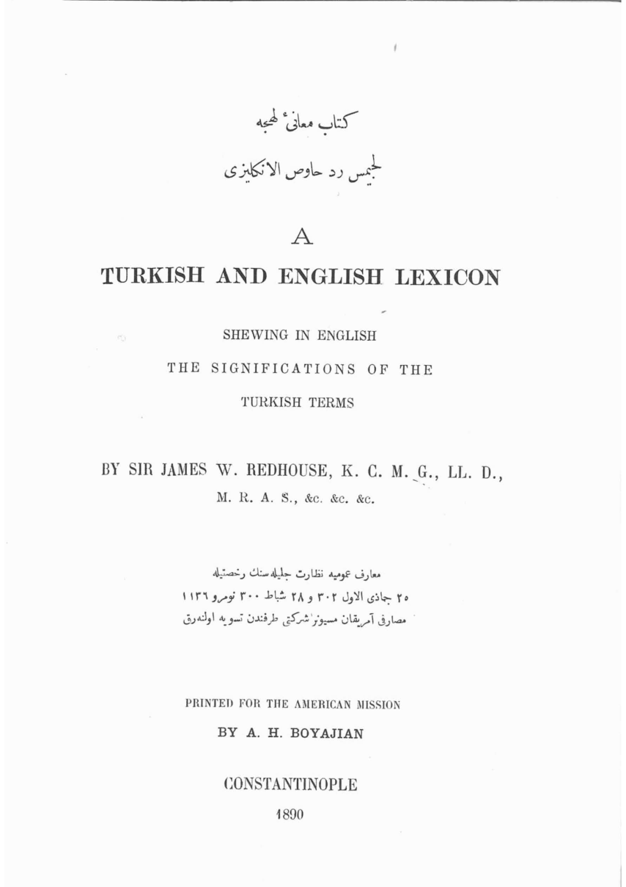
The work consisted of 2,224 pages, with each page containing two separate columns. We made each column into its own image, which resulted in a total of 4,448 separate images. Using visual editing software, we removed all objects that were not part of the actual text, like page numbers and the lines between the two columns.
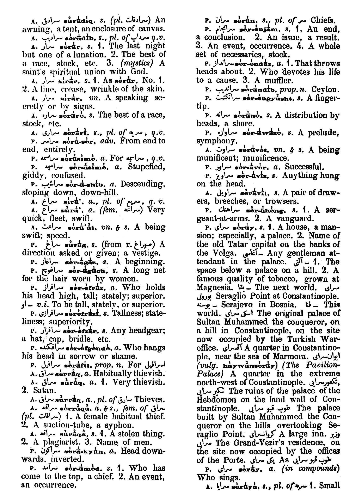
Subsequently, we ran these columns through an OCR process and obtained an editable text. However, as the example below illustrates, the resulting product contained multitudes of errors. Since the Ottoman portions of the text were impossible to isolate, they were also read and converted into unintelligible streams of characters by the OCR program.
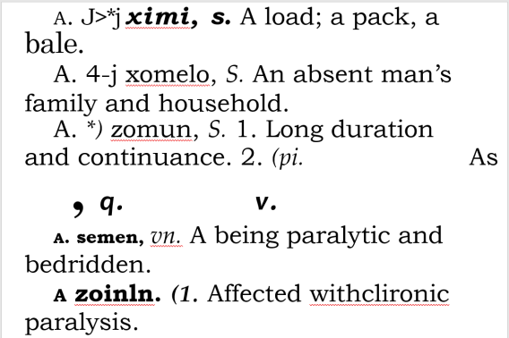
Consequently, we found it necessary to form a team to enter data and make the necessary corrections and adjustments.
We then took all the images and made them into sets composed of five pages (ten columns) each. This resulted in a total of 445 sets.
Those wishing to be a part of the program would first need to be approved. After approval, participants made a username and password with which they would use to log in to the program they had downloaded and request a set. After making the necessary changes to the texts, they would submit the set and would then be allowed to request a new one. We would check submitted sets and if any errors were found, we would return the set to the submitting individual. Only after having made the necessary corrections and resubmitting the set for approval could they continue to request new sets.
After a fourteen-month period spanning from October 13, 2017 to December 8, 2018, during which we distributed and collected all sets five separate times, we finally completed the digitization process.
Digitization Steps
Typing out Ottoman words
In an effort to minimize potential errors resulting from different alphabets being used simultaneously and because very few people are able to type Ottoman letters quickly, we decided that entering the Ottoman words in the Lexicon should constitute a single step in and of itself. To this end, we created an Excel spreadsheet and, while maintaining the order in which they appeared in the original text, we transcribed every single Ottoman word appearing in the dictionary between June and August of 2015.
Selecting Ottoman words appearing in the scanned images
During this step, project team members were asked to find the Ottoman words appearing in the scanned images of the original dictionary and, using their computer mouse, to encase them completely in red rectangles.
Words were then highlighted as illustrated below.
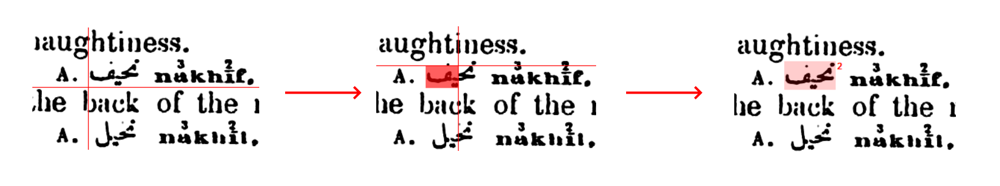
Utmost attention was paid while encasing words in rectangles. Anything not belonging to the word in question was excluded and every pixel belonging to the word was to be included in the rectangle.
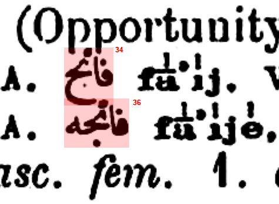
Sometimes a hyphen, which James Redhouse frequently used to represent the main entry instead of rewriting the Ottoman word, appeared immediately prior or subsequent to an Ottoman word. As a result, this hyphen was included in the rectangle while selecting entries.
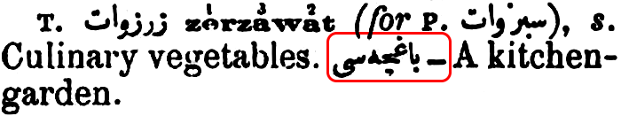
After comparing several examples, however, we noticed that a double hyphen, which represented the first two words of the sub-entry immediately preceding it, was sometimes used.
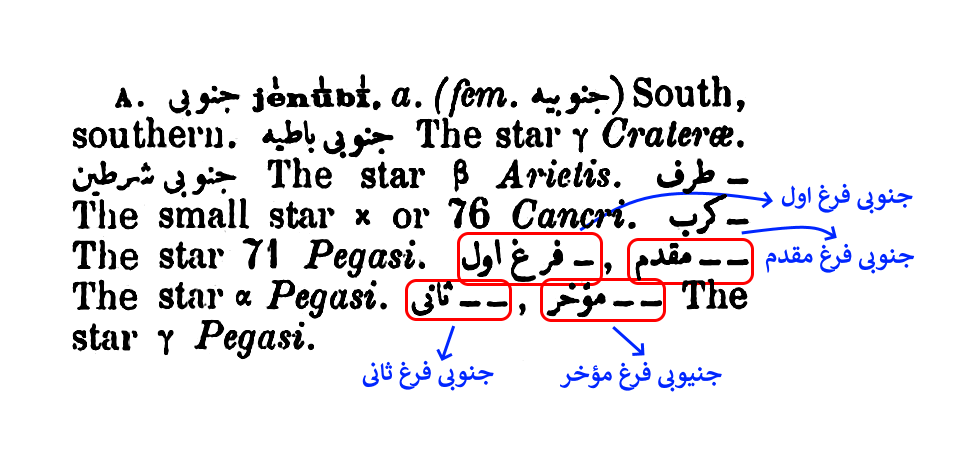
Another issue encountered was the frequent occurance of ا and او throughout the text, which represented the Ottoman words ایتمكand اولمق, respectively.
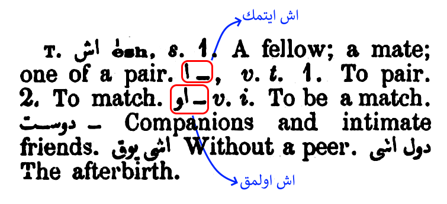
So that these words would appear when searched for, the full Ottoman word was written out instead of simply the initial characters representing them.
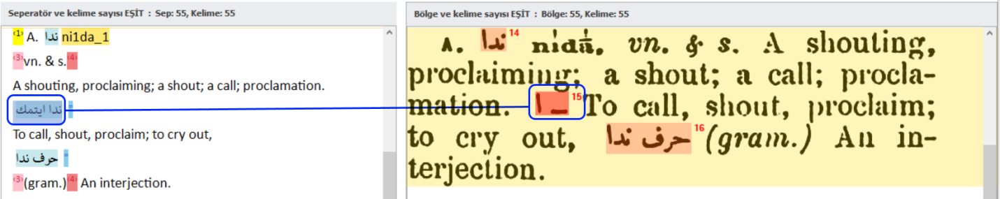
After all regions had been selected, the following image emerged.
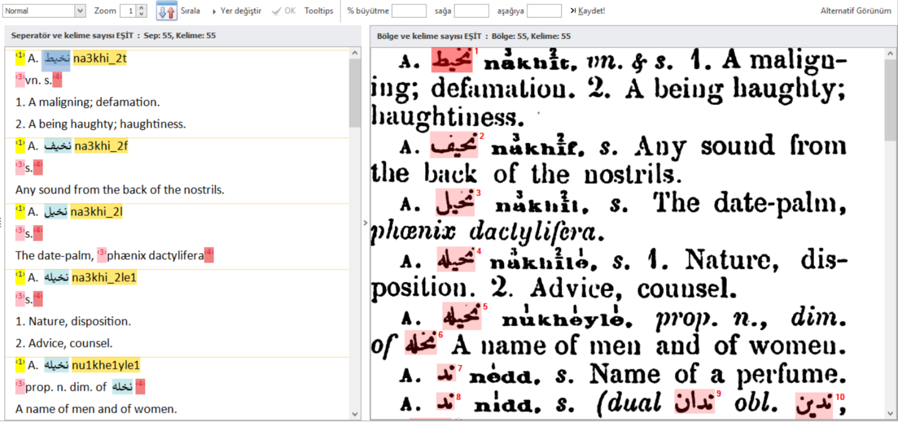
Correcting and arranging the text
Team members performed the following tasks during this step:
- Corrected errors in the English text emerging after the OCR,
- Entered Main Entry Separators at the beginning of each entry,
- Entered Ottoman Separators where Ottoman words appeared,
- Entered a Pronunciation Separator where phonetic pronunciations appeared,
- Entered a Foreign Word Separator for words originating from Greek, Hebrew, or another language,
- Made each enumerated meaning for entries into its own paragraph, and
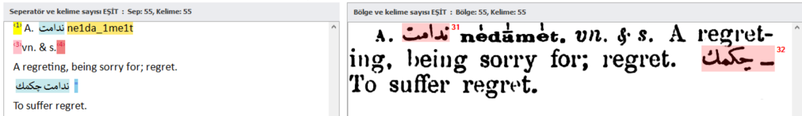
Since our project is an electronic copy of an original text that has no space restrictions, we deliberately preferred to employ a different method than the original for the last two items. Accordingly, as long as coherence and content integrity were maintained, we broke long, multifaceted definitions into smaller parts and frequently made parts of definitions into their own paragraphs so as to facilitate reading. In a similar vein, we made all tags (indicating the word’s part of speech and other similar information), each enumerated meaning appearing under definitions, and every sub-entry into their own paragraphs, even if they appeared differently in the original text.
Entering Pronunciations
We entered the phonetic pronunciations for words during this step. Since certain characters were impossible to emulate using available keyboards, any numerals or other diacritical marks above the letters in the original text were entered immediately following letters.
Characters are represented as illustrated below:
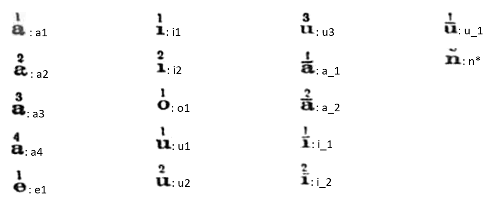
While editing entries, the region in which the pronunciation would be written was placed immediately below the original entry in order to avoid potential mistakes.
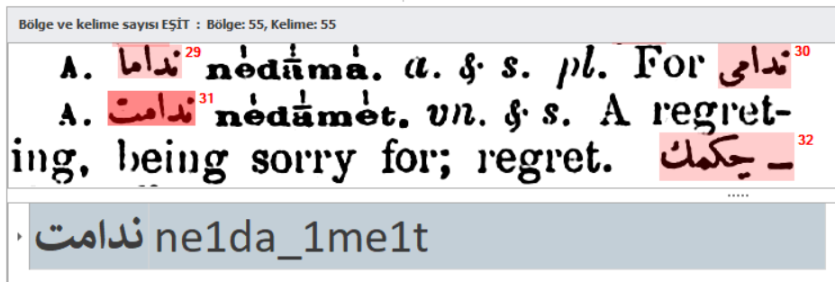
All possible character combinations were identified and, using an algorithm, impossible combinations were restricted from being entered.
Entering words from other languages
We encountered a total of 692 words mostly of Greek, but also of Hebrew, Russian, Armenian, or Syriac origin. After encasing these words in rectangles wherever they appeared in the original scanned images, we typed them out in their original characters.
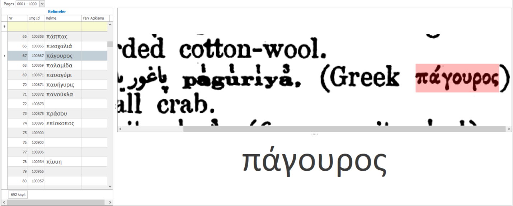
Matching words, regions, and separators
During this stage, team members confirmed that every word had been matched with its respective region in the original image and that it had been written correctly in the digitized version. Any mistakes were accordingly corrected.
Team members further checked whether pronunciations and previously entered words of other languages had been indicated in their appropriate places and corrected any mistakes. Any spelling errors for these words, however, were not edited by team members themselves. Instead, they were referred to us for correction so as not to compromise standardization.
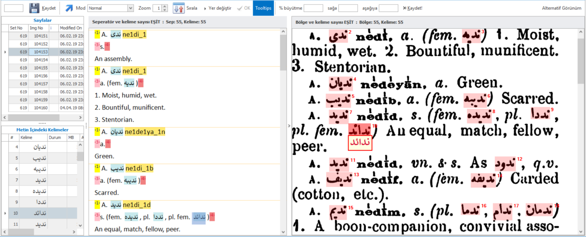
Orthographical Audit: Checking each Ottoman word individually
After matching words with their corresponding regions, the button Orthographical Audit (YazımDenetim) became active, which team members used to manually audit whether each Ottoman word or any other word item had been correctly transcribed.
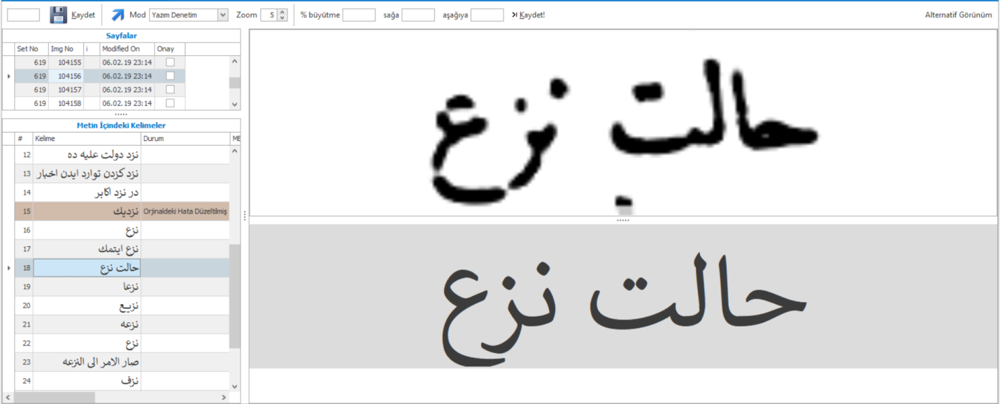
In order to identify typographic errors, the original images and editable text were enlarged as much as possible and each letter was individually audited. Starting from the right, team members were expected to examine each letter as illustrated below:
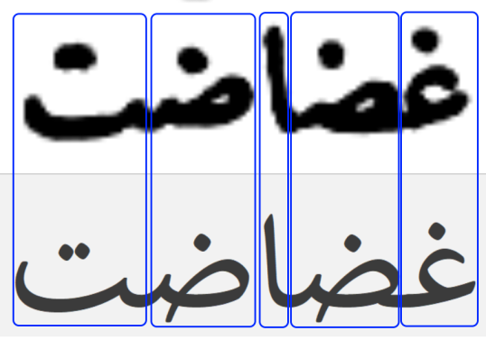
In order that each word were allocated sufficient time, the program restricted members from continuing to the next word before a specific period of time based on the number of letters in the entry (half second per letter) had passed. Essentially, short words were allotted a shorter waiting period whereas long words were accordingly allotted a longer period.
In the event that that team members discovered an error or any other discrepancy, they were asked to select the relevant word from the list on the left side of the page and mark it appropriately with one of the following three options:
- Incorrectly Written
- Error in Original Text Corrected
- Erratic Case
Using this method allowed us to perform the necessary amendments once the orthographical audit had been completed. If the word had been incorrectly written, we corrected it. Erratic cases were examined, and their appropriate spelling was decided upon and implemented. Although we did not intervene when an error in the original text had been corrected, we left the marker indicating such intact.
From time to time, cases similar to the following were encountered:
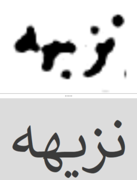
In the original image, the letter following ز was ambiguous and a single dot was visible. Given the context in which the word appeared, we determined that this letter should be written with two dots.
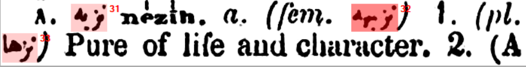
I would like to emphasize here that we gave great importance to the opinions, recommendations, and input of our users when auditing the orthography of such words in particular.
After completing the seventh step, we successfully came to the end of our digitization project.
Statistical Information
Now, we would like to share several important statistics in the following section.
First and foremost, although the original book’s introduction states that the initial plan was to include 100 thousand words and that 93 thousand words had effectively been included in the dictionary1, the book contained a total of 79,491 entries. Of these, 8,385 were homographs with their own distinct pronunciations and meanings.
Moreover, sometimes multiple entries in the dictionary shared the same definition. The number of entries for which the same definition is given is 3,006.
The author also specified in the book’s introduction that words of various linguistic origins were grouped into four categories, namely Turkish, Arabic, Farsi, and European languages,2 without defining what is meant by European languages. Based on this categorization, the numbers of words in each category are as follows:
Turkish (T): 21,904 words.
Arabic (A): 46,050 words.
Farsi (P): 10,136 words.
European languages (F): 1,401 words.
Whereas the total number of sub-entries is 30,572, unique sub-entries total 28,638. In fact, our project has allowed us the opportunity to identify sub-entries included in more than one main entry. For example, the sub-entry eşref saat is listed under both eşref and saat. Similarly, the word binbaşı is mentioned under both bin and baş. Interesting is that Redhouse provides different meanings each time these sub-entries appear. From this, we understand that the author did not have a precontrived list containing all of these entries and that he instead identified relevant sub-entries as he wrote entries. I believe that the existence of multiple, diverse meanings for the same word or phrases will be of interest to historians, literati, and especially philologists.
Additionally, there are Ottoman words that appear in definitions without their own definition and for which neither an entry nor sub-entry exists. For example, the word میدانیە appears as the feminine form of the entry میدانی. The total of such words for which no definition is provided is 50,422. The number of unique Ottoman words for which no definition is provided is 35,611.
Acknowledgments
A great many valuable people contributed to this two-and-a-half-year project. Only after many sessions of comprehensive consultation and the active participation of many competent individuals was this project to be realized.
First and foremost, I offer my most sincere thanks and endless gratitude to my very first thesis advisor in my academic career, dear Prof. Dr. Edhem Eldem, who, upon mentioning this project while still in its earliest conceptual stage, encouraged me to pursue it and who offered his valuable support when I encountered difficulties during digitization. Moreover, I wish to express my deepest respect and thanks to Mehmet Genç, Prof. Dr. Suraiya Faroqhi, Prof. Dr. Hatice Aynur, Prof. Dr. Engin Deniz Akarlı, and Prof. Dr. Mehmet İpşirli, all of whom expressed their enthusiasm when I explained the project to them and encouraged me to continue throughout the process.
Concerning software-related logistics, the invaluable contributions made by my mentor, Orhan Aykut, must be acknowledged. Mr. Aykut worked painstakingly on the project day and night so that data input would be as seamless as possible. Not only did he develop the software we used, he designed the architecture of its database. At the end of the day, despite so many different people using the software, Mr. Aykut developed an original and highly-efficient crowd-sourcing program that allowed a standard, cohesive product to be created. Other than the program itself, I am deeply grateful to him for sharing his helpful ideas about the project in general. I do not know how many obstacles we faced or how many complex problems we solved over the course of this long journey together. As for coding, the recommendations made by Hasan Özdemir, a long-time friend from my undergraduate days at Boğaziçi University who is now living in Seattle and working as a program manager and accessibility leader in Microsoft, are truly worth their weight in gold. He would guide me whenever I was stuck in a difficult situation. His advice both during the coding phase and concerning how the project should be run were always right on the mark. I am further greatly indebted to another friend from my undergraduate years, Abdurrahman Açıkgöz, who supported me in a wide range of matters, like directing the project, making decisions concerning user experience, deliberating over developments to be made to the LQ-Edit program, and the general running of the process. Currently working as a product manager at TRT-World, Abdurrahman was frequently the first person I would call and ask for ideas when I found myself in a dilemma. He has left his mark on several parts of the website, from the designs of boxes to the text appearing over buttons when your mouse hovers over them. With his vast knowledge of industrial engineering, he curbed my perfectionist tendencies and continually directed me to the best and most efficient option, for which I am truly grateful to him. Without his critical, yet constructive advice, we would still be working on this project.
Burak Şahin’s canny mediation of the problems we encountered related to reporting, obtaining statistics, and coding combined with his willingness to offer whatever assistance he could regardless of his schedule was certainly remarkable. With his vast knowledge both in computer engineering and in diverse academic fields, Dr. Harun Şencal is one of the people with whom I regularly consulted from the very onset of the project. Not only did Dr. Şencal offer several important pieces of advice on how to direct the program and form the software team, he assisted us in making appropriate decisions on several critical issues, including the database architecture and solutions to several technical problems emerging during digitization. The profound software knowledge of Assist. Prof. Ahmet Kaplan, faculty member and IT director at Ibn Haldun University, was quite veritably a saving grace in our darkest hours—like when our website was subject to a cyber-attack—where his intervention and valuable advice allowed us to continue working. Yusuf Akbulut’s straightforward, invaluable ideas were instrumental in the project’s continuation especially during its initial stages. He was also an individual whose consultation regarding LQ-Edit I continually sought during the digitization process. The original solutions that he would frequently share showed me once again just how vital consultation is.
Since the very inception of LexiQamus and well before the digitization of the Lexicon even began, Haluk Dortluoğlu, the CFO of BİM Inc., would always make time for me whenever I wanted to speak with him either on the phone or face to face, for which I am eternally indebted. Throughout the entire project, Dortluoğlu would generously offer words of encouragement and his own experience as a highly-qualified, successful businessman. Always by my side through thick and thin was Metin Karabaşoğlu, whose support I was able to feel over the entire course of the project. Making a separate TV program together with Şener Boztaş was an indication as to how much importance they attached to the study. İlhan Kartal never hesitated to share his years of experience as a high-level manager and an electronics and communication engineer in the telecommunication sector. His advice and critique were both innovative and constructive. İzzet Akyol, a successful businessman deeply interested in Ottoman history and language, believed in the project from the very beginning and did not withhold valuable advice from us. Also, I thank him for all his efforts in making more people aware of and able to benefit from our project. I am grateful to both Ramazan Saçmalı and Osman Zeki Uğur, who offered their support throughout the course of the project. Dr. Yunus Uğur, the first name that comes to mind in Turkey when discussing experimental and digital historiography, always gave value to my eccentric ideas, offered words of encouragement, and actively supported us in seeking financial support for our project. Indeed, he was one of the most important sources of motivation for me in believing that this project would be successful. Prof. Dr. Abdülhamit Kırmızı and Assoc. Prof. Dr. Berat Açıl would always lend an ear and offer constructive criticism whenever I would discuss with them on the project’s direction. With their knowledge of history, Dr. Ayşe Başaran and Dr. Betül İpşirli Argıt were both immensely helpful on a number of topics and would always point us to the right people with the right expertise in a wide variety of fields.
Since the entries in the dictionary are written in Ottoman script, their definitions in English, and the edition is somewhat dated, we would sometimes have doubts concerning the text itself. In such cases, the first person I would turn to for help was my philologist friend, John Zacharias Crist. As his first language is English, he provided us with satisfying answers to all of our English-related questions. Zack was always there to offer his help and guidance on whatever questions we had pertaining to English, and his recommendations can be seen in the written content appearing on the home page and what is written on the website’s buttons. Moreover, because of his knowledge of both modern and Ottoman Turkish along with being familiar with Farsi and Arabic, we were very fortunate to have him on this project. All of the questions he asked and the problems he pointed out while entering data not only were incisive but also forced us to reevaluate some of our earlier decisions. I am grateful and offer many thanks to Ebubekir Subaşı, a history and language specialist as well as expert archivist with whom I consulted concerning the distinction between the letter ە in Farsi and Arabic and in which cases which one should be used. For had this dilemma not been resolved, we would have encountered tremendous problems like either thousands of words in the database remaining invisible during searches or our not being able to devise an adequately detailed filtering system. I also thank Mustafa Karapınar, currently writing his master’s thesis in the School of Islamic Studies at Ibn Haldun University and who replied with patience each of my unending questions as to the special conditions of Arabic words, especially hamza. Whenever I ran into difficulties entering Greek words included in the lexicon, the assistance of Yusuf Ziya Karabıçak, who is about to complete his PhD in history at McGill University and EHESS, was especially valuable. Similarly, I must also thank Assist. Prof. Dr. Fatih Uslu, faculty member of Istanbul Şehir University’s Department of Turkish Language and Literature, for his help solving an Armenian word.
My dear friends Dr. Abdullah Taha Orhan, Dr. Hasan Umut and Muhammet Habib Saçmalı, currently pursuing his PhD in history at UCLA, were the very first individuals I would consult about linguistic issues as a result of their experience with and deep knowledge of English, Arabic, Farsi, and Ottoman Turkish. Dr. Abdullah Taha Orhan would provide genuinely satisfying answers to the questions I asked without any delay and would even brilliantly solve complicated problems that were outside of his field of expertise. Muhammet Habib Saçmalı pointed out problems that had remained hidden to us because of our position as producers and helped us find appropriate arrangements to overcome them. Being an active user of LexiQamus instead of merely an observer, his recommendations and critique were certainly worth their weight in gold. Keeping us informed of new developments and works emerging in the related academic literature, Dr. Hasan Umut was integral in keeping the project up to date. The contributions made by my dear friend Ali Bengü in situating the project’s steps into a workable framework cannot be underestimated, especially those steps taken during the period in which he actively participated. By devising well-defined result-oriented steps, he visibly increased the efficiency of the software team, for which I am truly grateful. Fortified by his brilliant power of reason and never hesitating to share his sagacious insight on the most complicated of issues, despite not being fully versed on the technical details of the problem, not only did my long-time friend and colleague Dr. Abdullah Enes Tüzgen prevent us from making wrong decisions on a variety of subjects, he saved us from suffering potential losses of time. I further owe a debt of gratitude to my dear friend and colleague Ömer Faruk Petek, who, in addition to his legal expertise, followed new technological trends and would inform me of alternative solution methods that opened many locked doors for us. I must also thank my dear friend İsmail Benli not only for sharing his ideas on a wide variety of topics, ranging from the project’s general direction to changes needing to be made so that the website’s interface would be more user-friendly, but also for offering his assistance wherever he could without hesitation.
Finally, I would like to touch upon the contributions made while entering data through LQ-Edit. Moderating the third phase of the project, my sister Ayşe Seyyide Adıgüzel was extremely precise in her work. After having analyzed submitted sets down to the finest detail, she would return those needing further work to team members along with appropriate commentary. I am grateful to her for her sacrifice, intense effort, and rigorous labor. I am also indebted to PhD candidate Ali Reza Hodaei at Istanbul Şehir University, who, by entering all of the Ottoman words contained in the dictionary, played an integral role in bringing the project to fruition.
True to our word, we have listed the names of all the project members who entered data into the system, with those making the greatest contribution at the top:
- Mustafa Atalay
- Hatice Tüfekçi
- Seher Kocaibiş
- Emre Gebece
- Zeynep Kılıç
- Sıdıka Düzen
- Eren Aras Aydın
- Betül Ayhan
- Yasemin Satar
- Murat Yücel
- John Zacharias Crist
- Zeynep Yılmaz
- Mustafa Aksu
- Emre Baysan
- Hasan Demir
- Onur Nizam
- Rumeysa Ervan
- Kadir Pürde
- Şehnaz İyibaş
- Şeyma Nur Demirci
- Burcu Çoğalmış
- Meryem İdiler
- Numan Deniz
- Osman Tozbey
As such, I thank all of the valuable project team members who worked through so many divergent and arduous tasks, like correcting, arranging, and editing the text, and whose efforts succeeded in bringing this project to life.
Regardless of the number of people who had a hand in this project, any and all shortcomings in the final product are my own. Since, unlike a printed book, making corrections and adjustments is very easy, I ask that any errors noticed be informed to us so that they may be immediately corrected.
What’s Next?
With your insight and feedback, we will continually strive to locate and reduce the likely errors in the dictionary. With our current program and the opportunities it confers to us, we plan to eliminate all possible errors within the medium term.
In the summer of 2020, we will integrate Kamus-ı Türkî into LexiQamus in both Ottoman and Latin script, as we have already digitized a significant portion of this dictionary. After that, we will continue to digitize another 250 or so dictionaries printed in the 19th and 20th centuries so as to preserve and further enhance the academic integrity of our project. This way we will continue to provide novel services and support to researchers.
Dr. Ahmet Abdullah Saçmalı
LexiQamus Founder
February 10, 2020
Bibliography
Redhouse, James. 1890. A Turkish and English Lexicon. Constantinople: Printed for the American mission.
Notes
- “It was computed that the work would contain about 100,000 Turkish words of Turkish, Arabic, Persian, and European origin, in the Turkish character, with their pronunciation in European letters, their various significations, and as many usual compounds and phrases as could be collected. Four years sufficed for the preparation of the manuscript of about 93,000 words.” James Redhouse. 1890. A Turkish and English Lexicon. Constantinople: Printed for the American mission. p. xi.↩︎
- Ibid.↩︎